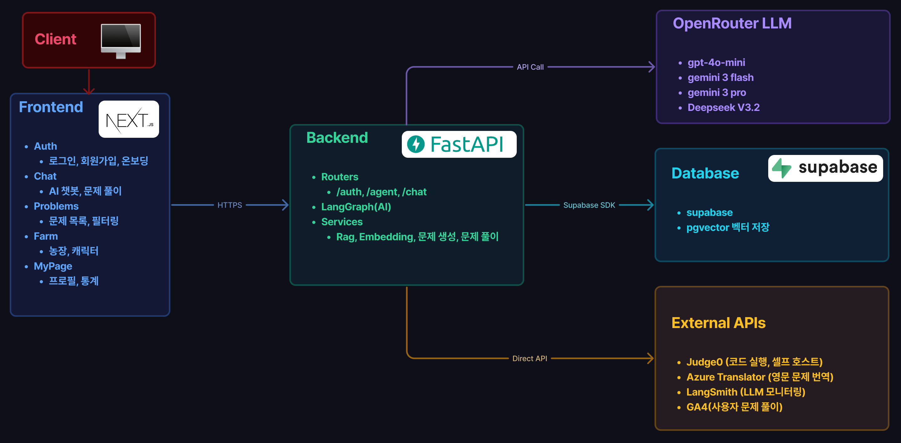

CodeFill
AI 기반 코딩테스트 학습 플랫폼
"알고리즘 공부, 어디서부터 시작하지?" 를 해결하는 서비스입니다.
기존 코딩테스트 플랫폼(프로그래머스, 백준)은 문제 풀이 위주로 학습 진입장벽이 높고 동기 부여가 부족합니다. CodeFill은 AI 튜터가 수준별 맞춤 문제를 추천하고, 4가지 유형(빈칸/퍼즐/대화형/구현)으로 단계적 학습을 지원하며, 게이미피케이션(농장 시스템)으로 학습 동기를 부여합니다.
기존 코딩테스트 플랫폼(프로그래머스, 백준)은 문제 풀이 위주로 학습 진입장벽이 높고 동기 부여가 부족합니다. CodeFill은 AI 튜터가 수준별 맞춤 문제를 추천하고, 4가지 유형(빈칸/퍼즐/대화형/구현)으로 단계적 학습을 지원하며, 게이미피케이션(농장 시스템)으로 학습 동기를 부여합니다.

프로젝트 정보
기간 2026.01 ~ 2026.02 (1개월)
팀 구성 2인 (부트캠프)
역할 Backend 개발
Claude Code(AI)를 적극 활용해 개발했으며, 생성된 코드의 로직과 아키텍처를 검증·보완하며 구현했습니다.
기술 스택
Backend
Python
FastAPI
LangGraph
Supabase
Frontend
Next.js
TypeScript
Infra
AWS
Docker
GitHub Actions
외부 API
OpenAI
Google Gemini
OpenRouter
Judge0
Azure Translator
시스템 아키텍처

주요 기능
| AI 문제 추천 | AI 튜터가 사용자의 수준과 선호에 맞는 문제를 추천합니다. RAG 기반으로 백준/프로그래머스 문제 DB에서 난이도·태그·풀이 이력을 고려하여 최적의 문제를 탐색합니다. |
|---|---|
| 4가지 문제 유형 | 빈칸 채우기, 코드 퍼즐(블록 정렬), 1:1 대화형 튜터링, 코드 구현 등 다양한 유형으로 단계적 학습을 지원합니다. |
| 실시간 코드 채점 | Judge0 API를 연동하여 Python 코드를 실시간으로 실행하고, 테스트 케이스 기반으로 채점합니다. |
| AI 튜터 채팅 | LangGraph 기반 대화형 AI 튜터가 힌트 제공, 코드 리뷰, 개념 설명을 합니다. 의도 분류 → 적절한 핸들러 라우팅으로 동작합니다. |
| 게이미피케이션 | 문제를 풀면 XP와 씨앗을 획득하고, 농장에서 작물을 재배할 수 있습니다. 티어(Silver~Master), 뱃지, 스트릭 시스템으로 학습 동기를 부여합니다. |
| AI 학습 분석 | BKT·ELO 기반으로 개념별 실력을 추적하고, LLM(Gemini Flash)이 에러 패턴·약점을 진단하여 맞춤형 학습 리포트를 생성합니다. |
| 소셜 로그인 | 카카오, 구글, 깃허브 3종 OAuth 로그인을 지원합니다. JWT 토큰 기반 인증과 계정 복구/연동 기능을 제공합니다. |
담당 기능
소셜 로그인 (OAuth)
- 카카오 / 구글 / 깃허브 OAuth 3종 통합
- JWT 토큰 기반 인증 처리
- 회원가입 · 로그인 · 비밀번호 변경/재설정
코드 채점 시스템 (Judge0)
- Judge0 API 연동 (Python 코드 채점)
- Judge0 셀프호스팅 서버 구축
- 테스트 케이스 기반 실시간 채점
게이미피케이션
- XP 획득 및 티어 승급 시스템 (Silver~Master)
- 씨앗 수집 + 농장 재배 보상 구조
- 뱃지 달성 · 연속 학습 스트릭 등 보상 루프 설계
AI 학습 분석 리포트
- Google Gemini Flash LLM 기반 맞춤형 리포트 생성
- BKT · ELO 레이팅으로 개념별 실력 추적
- 에러 패턴 감지 및 약점 진단
관리자 · 문제 · 커뮤니티
- 관리자 대시보드 (사용자/문제/통계 관리)
- 문제 목록 조회 (난이도/출처/태그 필터링)
- 풀이 게시판 CRUD · 투표 · 계층형 댓글
REST API 설계 / CI·CD
- RESTful 엔드포인트 설계
- Docker 컨테이너화 + AWS EC2/ECR 배포
- GitHub Actions 자동 배포 파이프라인
트러블슈팅
01
배포 후 특정 사용자만 로그인 실패 — bcrypt 72바이트 제한
상황
배포 후 대부분의 사용자는 정상 로그인되는데, 특정 사용자만 비밀번호가 맞는데도 로그인이 실패하는 문제가 발생했습니다.
원인
비밀번호 해싱에 사용하는 bcrypt가 최대 72바이트까지만 처리하는 제한이 있었습니다. 한글이 포함된 긴 비밀번호는 UTF-8 변환 시 바이트 수가 급증하여 72바이트를 초과하면 해싱 결과가 달라졌습니다.
해결
해싱 전에 비밀번호를 72바이트로 잘라내는 처리를 추가하고, bcrypt 라이브러리 버전 업데이트로 발생한 호환성 문제도 버전을 고정하여 함께 해결했습니다.
02
Docker 빌드 및 배포 환경 구성
상황
로컬에서 정상 동작하던 프로젝트가 Docker 빌드 시 여러 단계에서 반복적으로 실패했습니다. 빌드가 안정화되기까지 3번의 수정이 필요했습니다.
원인
패키지 매니저 충돌로 의존성 설치 실패, ORM 클라이언트 생성 단계 누락으로 DB 연결 실패, 환경변수 미전달 등 로컬과 컨테이너 환경의 차이에서 발생한 복합적 문제였습니다.
해결
패키지 매니저를 npm으로 통일하고, Dockerfile에 ORM 클라이언트 생성 단계와 환경변수를 추가했습니다. standalone 모드를 적용하여 이미지 크기도 줄였습니다.
03
Supabase + JWT 이중 인증 충돌
상황
카카오 OAuth 추가 후 Supabase Auth 세션과 백엔드 JWT가 공존하면서, 로그인 후 무한 로딩이나 새로고침 시 인증이 풀리는 문제가 반복 발생했습니다.
원인
이메일 로그인은 Supabase 세션, OAuth 로그인은 백엔드 JWT를 사용하는 이중 인증 구조였습니다. 두 인증 상태가 동기화되지 않아 한쪽이 만료되면 충돌이 발생했습니다.
해결
Supabase Auth를 완전히 제거하고 FastAPI 자체 JWT로 인증을 일원화했습니다. 회원가입·로그인·OAuth 모두 백엔드에서 직접 JWT를 발급하는 구조로 전환하여 인증 충돌을 근본적으로 해결했습니다.